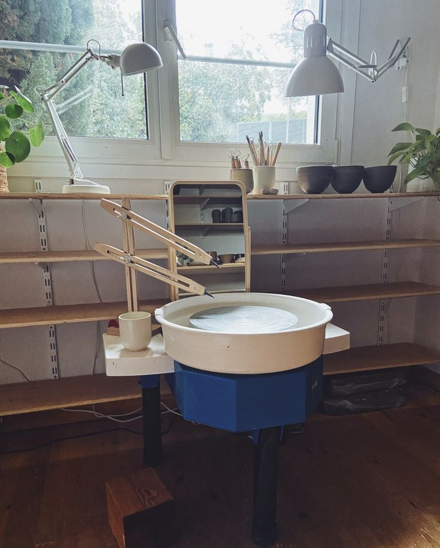

My current personal interest is pottery. I recently started taking a pottery course this summer, where I have been learning the basics and developing my skills. Since starting, I have made an effort to practice regularly and improve my technique. Pottery has become an enjoyable hobby that allows me to learn something new while working with my hands.
I prefer wheel throwing pottery over handbuilding. I like the process of shaping and forming clay on the pottery wheel and learning how to control the shape and size of each piece. Although it takes practice and patience to get the results I want, I find the process rewarding.
One of my favorite parts of pottery is being able to create unique and functional pieces. I enjoy making items such as vases, bowls, plates, and cups that I can use or keep. I also like that each piece is different, and there is always room to improve and try new techniques. Overall, pottery has become a hobby that I want to continue developing over time.
My Current Favorite Ceramic Glazes

